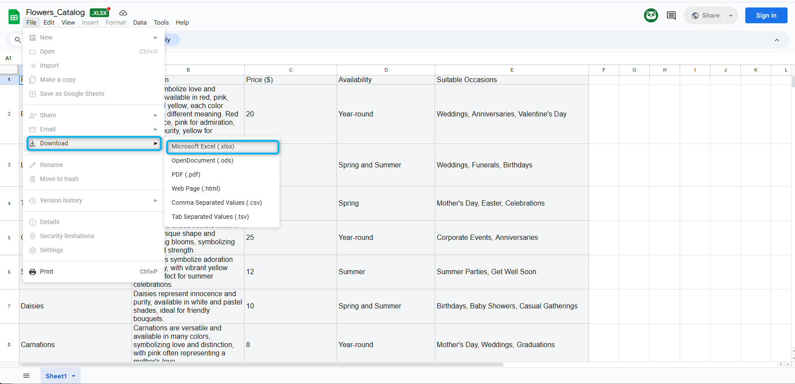
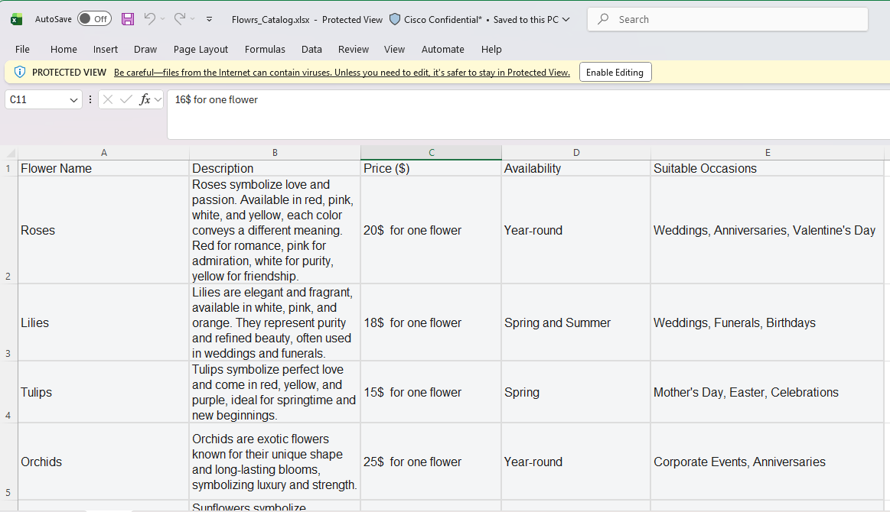
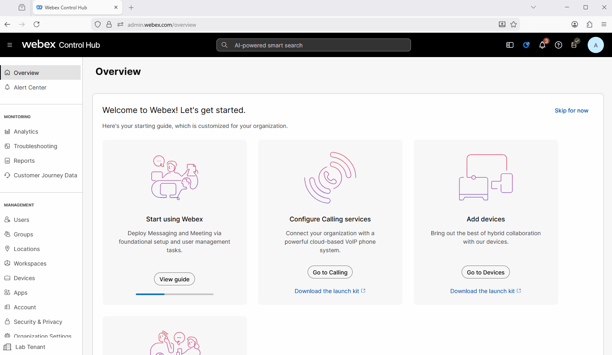
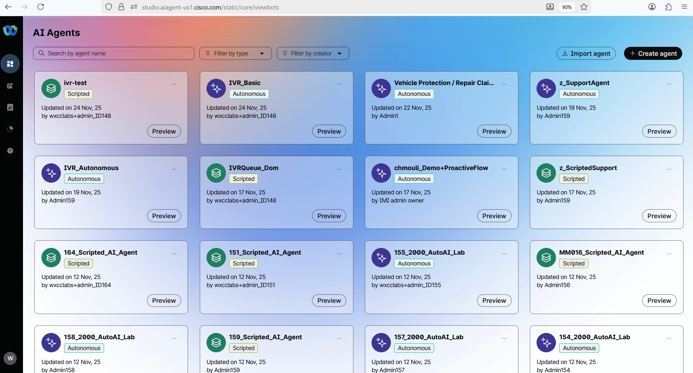
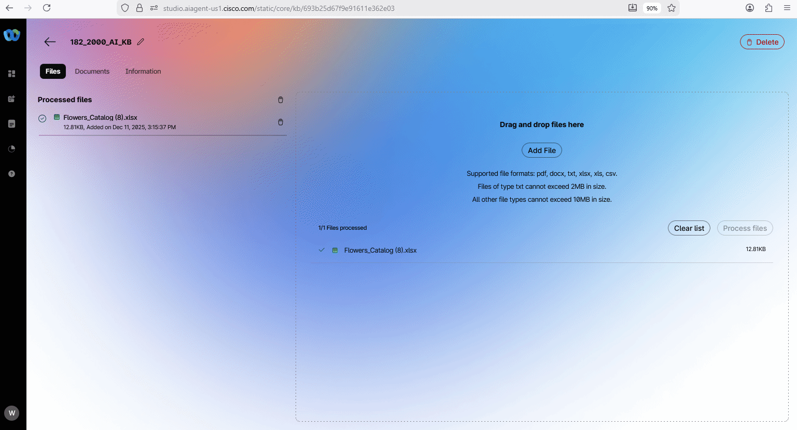
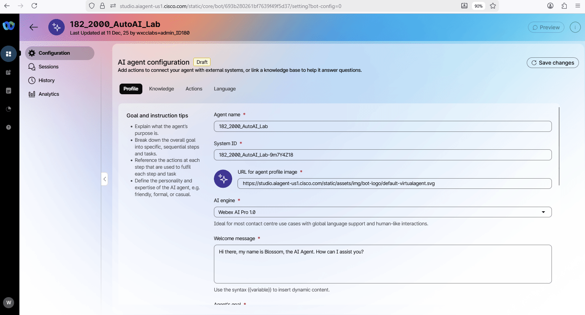
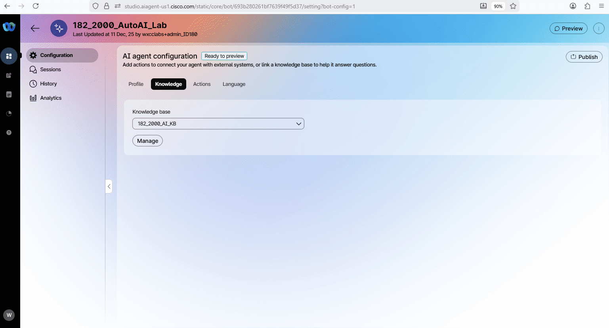
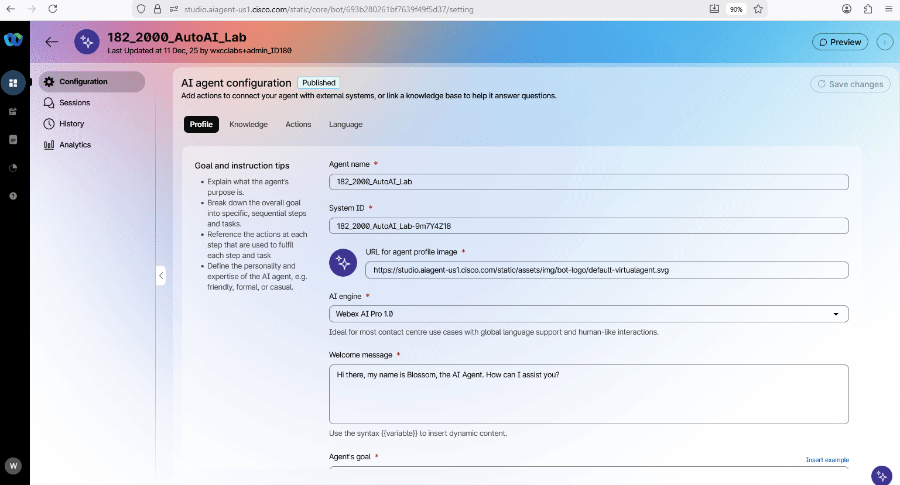

Mission 1: Create AI Autonomous Agent
Mission overview
Your mission is to:
Create an AI agent and upload the knowledge base (KB) to enable the agent to provide answers about available flowers and assist customers with creating an order or transferring the interaction to a human agent.

Build
Task 1. Create a new AI Agent with Knowledge Base
- Download the .xlsx file Flowrs_Catalog.
Flower_Catalog.xlsx - file contains information on the available single flowers and bouquets, including the price of the flowers or bouquets and occasions that suit the flowers.

-
Open up and review the file.

-
Go to Webex Control Hub.
-
Open Contact Center from the left side navigation panel, and under Overview > Quick Links, click on Webex AI Agent.

-
In AI Agent Builder, navigate to Knowledge from the menu panel on the left side.
-
Click Create Knowledge Base, provide Knowledge base name as Your_Attendee_ID_2000_AutoAI_Lab, then click Create.

-
Click Add File or drag and drop the downloaded file Flower_Catalog.xlsx you downloaded on Step 1. Then click Process Files. Wait until the file is processed. It could take 1-2 mins.

-
[Read Only] : You can also natively create a Knowledge Base document by clicking on Documents, then Create Document and paste the content. Save it.

-
Navigate to AI Agents from the left-hand side menu panel and click on Create Agent.

- Select Start from Scratch and click Next.
-
On Create an AI agent page select the following select the type of agent: Autonomous.
-
Provide the following information in the Add the essential details, then click Create:
Agent Name: Your_Attendee_ID_2000_AutoAI_Lab
System ID is created automatically
AI engine: Webex AI Pro 1.0
Agent's goal: This is Flower Shop. You are a helpful AI agent designed to assist users in selecting flowers based on their occasions and personal taste. You can also set up delivery and send a confirmation SMS with the order details.
[Read Only] Here you can find the best practices on how to write the Agent"s goal. Do's and Don'ts when writing goals
-
Customize the Welcome message with: Hi there, my name is Blossom, the AI Agent. How can I assist you?
-
In the instructions, add additional specific guidelines that you would like the AI Agent to follow. Just copy the text below and paste it to the Instructions section, then press Save changes.
Always first check what is the event for the flowers so you can provide the best option. Always print the total at the end of the conversation at any stage. Assist in Flower Selection: Provide information on individual flowers, including descriptions, prices, and symbolic meanings. Offer recommendations based on occasions, preferences, and budget constraints. Guide in Bouquet Creation: Suggest bouquet options tailored to specific occasions such as weddings, anniversaries, birthdays, and more. Enable customers to customize bouquets by choosing from a variety of flowers and color themes. Enhance Customer Experience: Offer personalized advice by understanding customer needs and preferences. Ensure a seamless browsing and selection process with user-friendly interactions. Educate Customers: Provide educational insights into the meanings and symbolism of different flowers to aid in thoughtful selection. Share care tips for maintaining flower freshness and longevity. Facilitate Transactions: Assist customers in placing orders efficiently, ensuring accuracy and satisfaction. Provide support for payment processing and order confirmations. Ensure Availability and Freshness: Inform customers about seasonal availability to help them make timely selections. Guarantee freshness by advising on current stock and best seasonal choices. Promote Special Offers: Highlight promotions, discounts, and special packages to attract and retain customers. Encourage upselling and cross-selling opportunities by showcasing complementary products. Ask if the customer needs the deliver. Collect the address and add price of the delivery to the Total. Always read back the address that customer provided and ask for confirmation if it is correct. If it is not correct, ask to provide the address again. Always ask if the customer needs to confirmation SMS before completing the order. -
[Read Only] Here you can find the best practices on how to write the Instructions: Prompt engineering tips when writing instructions
-
Switch to Knowledge tab and from Knowledge base drop-down list, select Your_Attendee_ID_2000_AutoAI_Lab.

-
Click on Save changes and Publish the flow. Provide any version name in popped up window (e.g. "1.0").

{kind=link}
{kind=link}
{kind=link}
{kind=link}
{kind=link}
{kind=link}
{kind=link}
{kind=link}
{kind=link}
{kind=link}
Task 2. Test your AI Agent
-
Click on Preview and test the AI Agent to understand how it behaves using the chat channel by clicking on Start a chat. You can start the conversation with: I need flower for my friend. And try to ask what is the flower availability and prices and what would be the total for some flower that you select.

-
Click on Preview and test the AI Agent to understand how it behaves using the voice channel by clicking on Start a call. You can start the conversation with: "I need flower for my friend" and try to customize your order.
{kind=link}
Note
This Lab is being conducted in a classroom with approximately 100 attendees.
Environmental factors, such as background noise and other attendees speaking next to you, may affect the response accuracy.
For best results, it is strongly recommended to use computer headphones, if available.

Congratulations, you have officially completed this mission! 🎉🎉